地政学
グアテマラシティは大統領府、議会、最高裁、省庁、大使館、金融機関を集める首都で、中米北部、メキシコ、米国移民回路、太平洋港、カリブ海側物流を結ぶ結節点である。治安、災害、外交の判断も街路へ現れる。
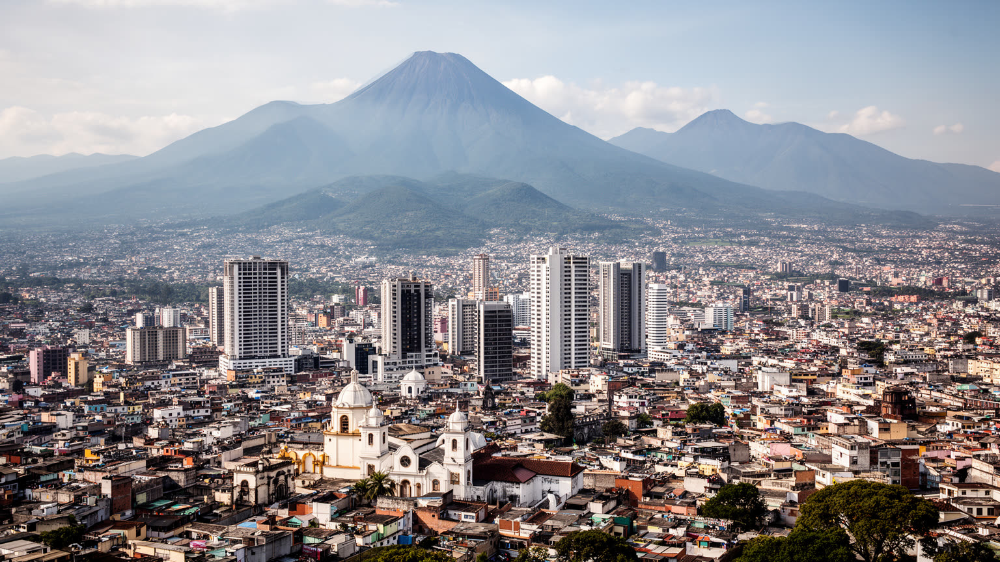
🇬🇹 グアテマラ / 中央アメリカ / World City Atlas
中央高原の盆地に広がる国家首都。マヤ世界と植民地の記憶、行政、金融、卸売、交通、宗教、移民送金、火山リスク、治安と住宅格差が、谷の幹線道路と市場に重なる都市です。
都市の骨格
グアテマラシティは、火山に囲まれた中央高原の盆地に、政府、銀行、市場、バスターミナル、住宅地、大学、教会、工業地帯を集めます。観光の玄関口である前に、国の行政と労働が毎日交差する首都です。
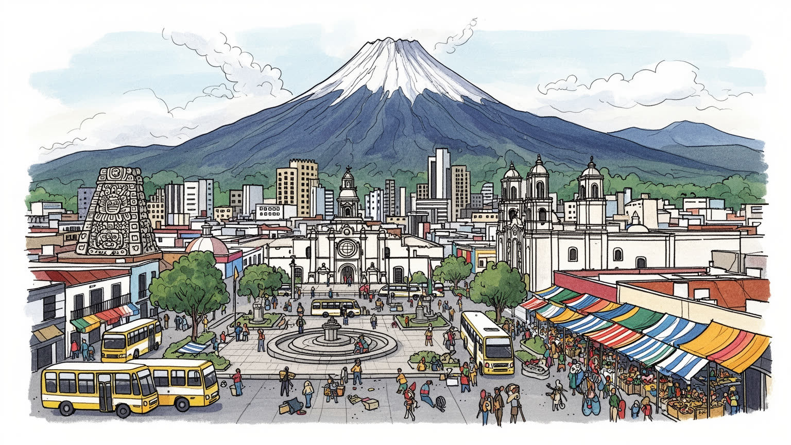
グアテマラシティは大統領府、議会、最高裁、省庁、大使館、金融機関を集める首都で、中米北部、メキシコ、米国移民回路、太平洋港、カリブ海側物流を結ぶ結節点である。治安、災害、外交の判断も街路へ現れる。
行政、銀行、卸売、小売、通信、建設、教育、医療、食品加工が雇用を支える。市場の販売、バス運行、警備、家事、清掃、露店、配送も大きく、正式雇用と非公式労働が同じ谷の通勤圏で重なる都市である。今も続く。
カトリック、福音派教会、マヤ系の儀礼、聖人祭、家族の祈り、マリンバ、織物、市場の食が都市文化を形作る。植民地の首都記憶と先住民文化は別々でなく、街の行事、商売、墓参、祈願に混じり合う。日常である。
中央市場、歴史地区、博物館、教会、火山眺望、アンティグアへの玄関口が訪問者を引く一方、住民には渋滞、治安、住宅、断水、通勤費、物価が切実だ。観光の印象と日々の負担が近い距離にある。課題も今も続く。
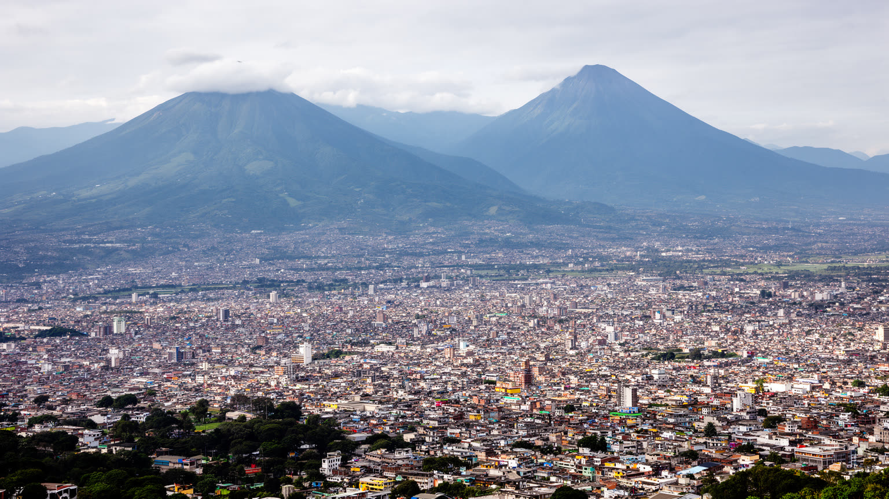
グアテマラシティは、標高約千五百メートルの中央高原にあり、アグア、フエゴ、アカテナンゴ、パカヤなどの火山を遠望する盆地に広がる。暑すぎない気候は生活の利点だが、谷状の地形は交通の集中、大気汚染、雨季の斜面崩壊、排水、地震リスクを都市の条件にする。市街地は歴史地区の格子状街路から、ゾナ制で区分された商業地区、住宅地、工業地区、郊外自治体へ伸び、中心と周縁の距離を毎日の通勤が結ぶ。山並みは美しい背景であると同時に、都市がどこまで拡張できるか、どの斜面に危険があるかを示す境界でもある。火山灰、豪雨、地震は、住宅の質や排水の弱い地区ほど重い負担になる。谷の首都を読むには、展望写真の向こうにあるバス停、坂道、橋、渋滞、崖上の住宅、排水路、避難経路まで見る必要がある。地形は観光の飾りではなく、住まい、交通、災害、空気の質を決める都市の基礎である。高原の涼しさが都市の魅力を作るほど、雨季と地震への備えも首都の日常に深く組み込まれる。都市の拡張は谷の外縁へ向かうほど、道路、上下水道、学校、救急の整備を難しくする。火山を望む眺めの美しさと、斜面に住む人の危うさを同時に見ることが、この首都の地理を読む第一歩になる。朝夕の雲や雨の流れも、通勤時間と斜面の安全を左右する。都市計画はこの地形との交渉である。今も。
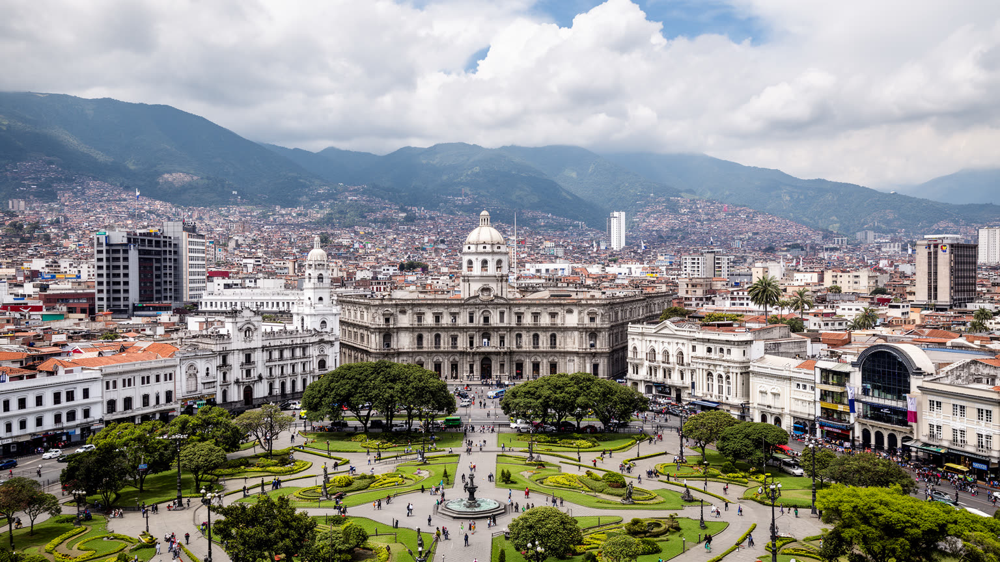
グアテマラシティは、国の政治がもっとも集中して見える場所である。国立宮殿、議会、最高裁、省庁、中央銀行、大使館、大学、報道機関が首都圏に集まり、予算、司法、治安、先住民権利、土地、移民、災害対応の議論が都市の日常と隣り合う。政治は庁舎の内部だけでなく、中央広場の集会、警備、交通規制、抗議の行進、公共事業、選挙ポスターとして街に現れる。内戦後の和平、汚職への不信、司法の独立、農村と先住民地域の代表性は、首都の制度が誰の声を聞くのかを問い続ける。地方から来た人にとって、首都は手続きと教育と医療の入口である一方、距離と費用の壁でもある。グアテマラシティの首都性は、中米北部の地政学、米国との移民関係、麻薬取引への対策、国際援助、企業活動を同じ行政空間に集める点にある。首都を歩くことは、国家がどこで意思決定し、どこで市民から問われ、どの人びとがその場へ近づきにくいかを読むことである。制度の強さは建物の威容ではなく、抗議や相談や異議申し立てを受け止める街路の開き方に表れる。首都への権限集中は、地方の学校、道路、病院、農村開発の遅れとも結びつく。だから中心の広場で起きる政治は、遠い村の暮らしと切り離せない。警備された通りと開かれた広場の差も、制度への信頼を映す。首都の沈黙も政治的なサインになる。今も。
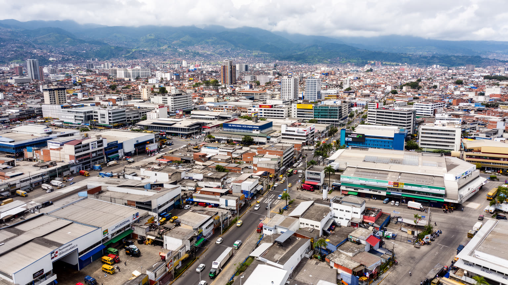
グアテマラシティの経済は、銀行や高層オフィスだけでなく、市場、卸売、バスターミナル、倉庫、露店、配送、食品加工によって動く。中央市場や周辺の商業地区には、野菜、果物、肉、花、織物、日用品、宗教用品、屋台食が集まり、地方の農産物と都市の消費をつなぐ。卸売の背後には、早朝に入るトラック、荷役、仕分け、現金取引、家族経営の店、女性の販売労働、警備、清掃がある。フォーマルな金融とインフォーマルな商売は別世界ではなく、同じ家計の中で混じることも多い。銀行や通信企業が近代的なサービス経済を広げる一方、都市の多くの人は露店、日雇い、家事労働、バス運行、建設、警備で収入を得る。市場は観光客にとって色彩豊かな場所だが、住民にとっては物価、治安、交通、信用、食の安全、家族の生計が交差する生活基盤である。首都の商業を読むには、ショッピングモールと市場を対立させるのではなく、輸入品、地方産品、送金、現金商売、デジタル決済がどう重なっているかを見る必要がある。都市の経済力は、公式統計に表れる本社機能と、毎朝商品を並べる手の両方から成り立つ。物価が上がれば、市場で買う量、屋台の値段、通勤費、子どもの弁当まで変わる。数字の成長は、家計が一日を回せるかという小さな現場で試される。朝の市場には地方と首都の関係が凝縮する。
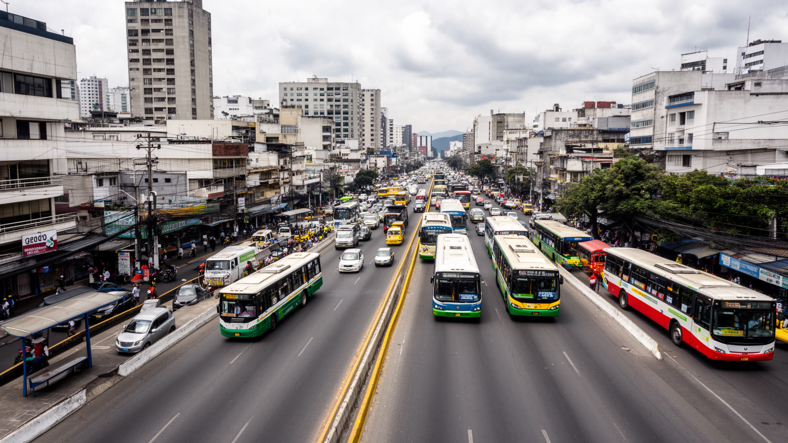
グアテマラシティの移動は、幹線道路、バス、BRT、ミニバス、タクシー、徒歩、バイクが複雑に重なっている。首都圏は自治体を越えて広がり、仕事、学校、病院、行政手続きのために多くの人が長い通勤を強いられる。道路は谷の地形と開発の偏りに影響され、橋や交差点、バスターミナルの混雑が日常の時間を奪う。自家用車を持てる世帯と、乗合交通に頼る世帯では、都市へのアクセスが大きく違う。公共交通は生活の基盤だが、治安、混雑、乗り換え、運賃、女性や高齢者の安全が課題になる。通勤の長さは、家族の食事、子どもの送り迎え、学習、休息を削り、住宅が安い地域ほど中心への移動負担が重くなりやすい。交通を読むことは、単に渋滞を測ることではなく、誰が早く中心へ届き、誰が待ち時間と危険を引き受け、誰が夜に帰る道を不安に思うのかを見ることである。都市の改善は高架道路だけでは足りない。歩道、照明、バス停、乗り換え、運賃、女性の安全、郊外の雇用配置を一体で考えて初めて、谷の首都は日常の距離を縮められる。移動の不安は、教育や医療へ届く力も左右する。乗り換えが安全でない都市では、仕事の選択肢も狭くなる。朝の渋滞は家計の時間を奪い、帰宅の遅れは家族の世話にも響く。安全な停留所と歩道は、首都の公平さを支える小さなインフラである。交通は生活の自由度を決める。
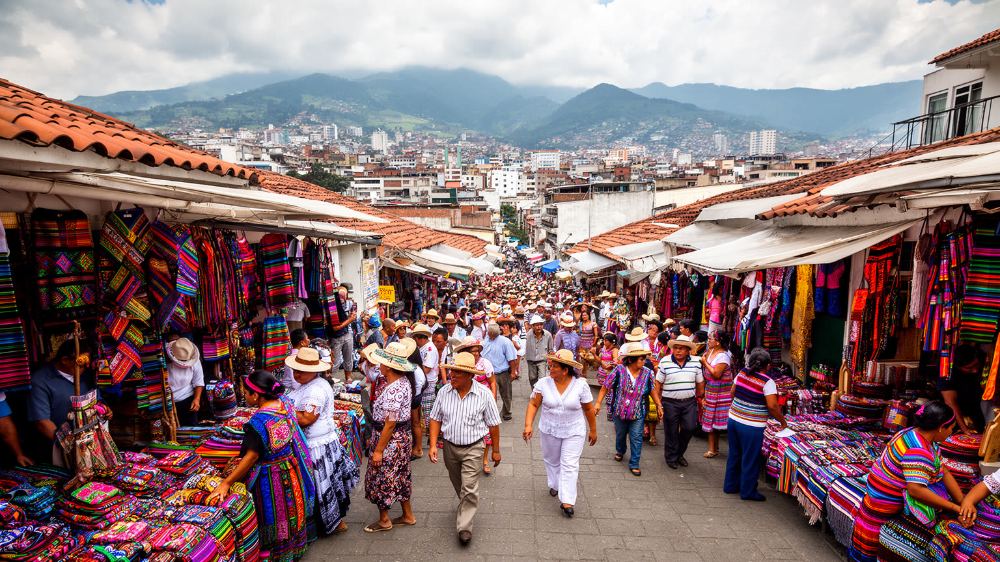
グアテマラシティは、植民地後期に首都となった都市でありながら、周囲の高原にはそれ以前からマヤ系社会の長い歴史がある。国立博物館、考古遺物、織物、市場の言語、儀礼、家族の記憶は、都市の中にマヤ世界を残している。スペイン植民地の行政、カトリック、土地所有、階層秩序は、独立後の国家制度にも影を落とし、先住民とラディーノの関係、言語、教育、差別、代表性の問題として今も続く。歴史地区の建物や広場だけを見れば首都の歴史は整って見えるが、その背後には征服、強制労働、内戦、移住、都市周縁への定着がある。市場で売られる織物や工芸は観光商品であると同時に、地域の技術、女性の労働、民族的な誇り、商業化の緊張を抱える。グアテマラシティを読むには、マヤ文化を過去の展示物として扱わず、都市で働き、学び、祈り、商売する人びとの現在として見る必要がある。博物館の展示、学校の教育、公共空間の言語、政治参加が、誰の歴史を正面に置くかを決める。首都は国の統合を語る場所であるほど、複数の記憶を消さずに並べる責任を負っている。言語の違いや衣装の意味を観光の色彩だけに還元しないことも重要である。文化は飾りではなく、権利、土地、家族、教育と結びついた生きた制度である。首都で聞こえる言語の多様さは、国家が抱える複数の時間を示している。
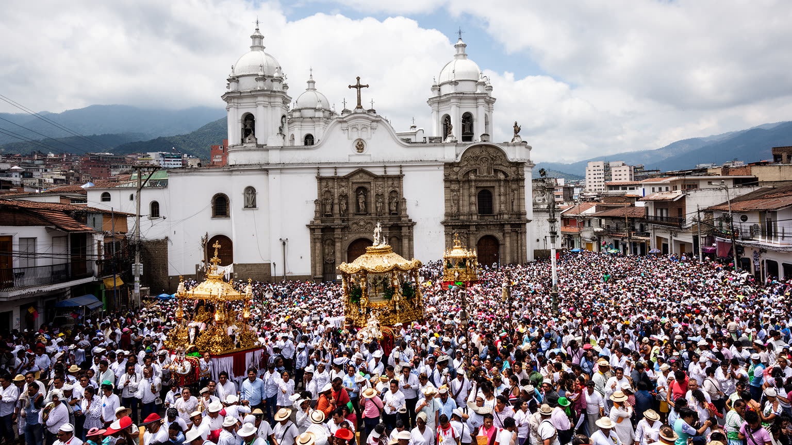
グアテマラシティの宗教生活は、カトリック教会、福音派の礼拝、マヤ系の儀礼、聖週間の行列、家庭の祭壇、墓参、病気や受験や商売の祈願に広がる。歴史地区の大聖堂や教会は首都の象徴だが、信仰の多くは住宅地の礼拝、近所の助け合い、音楽、説教、寄付、家族行事として続く。福音派教会の拡大は、社会不安、貧困、家族、政治的価値観とも関わり、地域の相談先になることもある。マヤ系の儀礼は都市の周縁に押し込められた過去ではなく、移住した家族や市場の商い、祝祭の中で形を変えながら生きている。聖週間の絨毯や行列は観光客を引きつけるが、準備する住民の時間、信仰、地域組織があって初めて成立する。宗教は都市の緊張を和らげる場であると同時に、性、教育、政治、暴力をめぐる意見の違いを表す場にもなる。グアテマラシティの信仰を読むには、教会建築の美しさだけでなく、礼拝後の食事、困窮者支援、若者の居場所、葬送、祭りの資金集めまで見る必要がある。祈りは都市の暦であり、人びとが不安の多い首都で関係をつなぎ直す方法でもある。災害や暴力の後には、礼拝所が情報、食料、寄付、慰めを分ける場にもなる。信仰は個人の内面であると同時に、都市の安全網でもある。祭礼の準備は地域の役割分担を見える形にする。行列の経路も街の記憶を更新する。毎年。街中で。
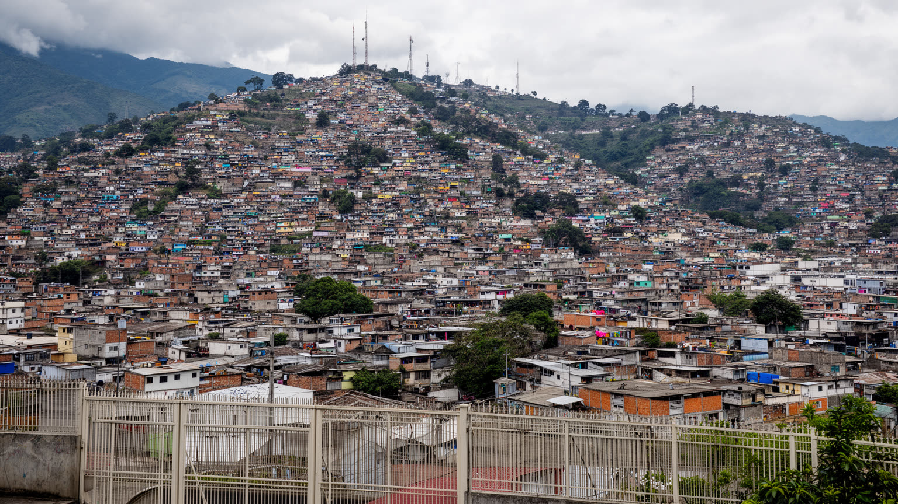
グアテマラシティの暮らしは、地区によって大きく違う。金融街や商業地区、高所得者向けの集合住宅、ゲート付き住宅地がある一方、斜面や谷沿いにはインフラの弱い住宅地も広がる。家賃、通勤時間、水道、排水、学校、医療、公共交通、治安の差が、日々の選択を制限する。治安への不安は都市の行動を変え、移動時間、通る道、店の営業時間、子どもの通学、女性の外出、公共空間の使い方に影響する。暴力や恐喝の問題は、単に犯罪統計ではなく、若者の進路、警察への信頼、地域組織、雇用、家族の不安とつながる。安全を求める壁や警備は一部の住民を守るが、都市全体の分断を深めることもある。住宅の質が低い地区では、雨季の土砂災害や断水の影響も大きい。住まいは個人の財産である前に、都市へ参加するための条件である。グアテマラシティを読むには、中心の美しい建物と同じ重さで、斜面の通路、街灯、学校までの距離、バス停の安全、家族が払う警備費を見なければならない。安心して歩ける街路と安定した住まいがなければ、首都の経済成長は一部の場所に閉じてしまう。子どもが放課後に遊べる場所、高齢者が病院へ行く道、女性が夜に帰る経路は、都市の成熟を測る具体的な指標である。住宅政策は治安政策でもあり、公共空間への信頼を作る基盤である。住まいの安定が将来の選択を広げる。
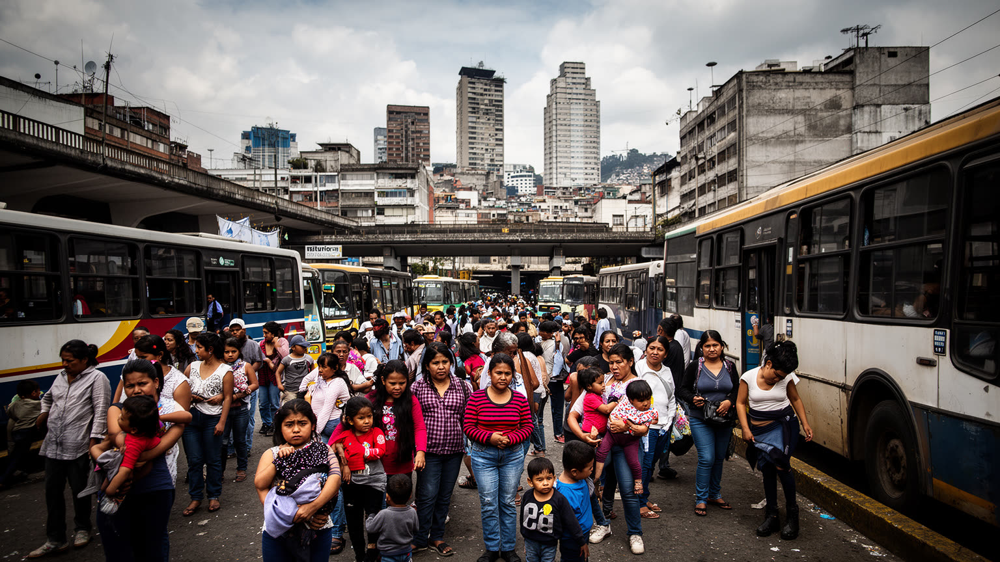
グアテマラシティは、国内移住と国際移民の回路が集まる都市である。地方から首都へ来る人は、学校、病院、行政、仕事、親族の支援を求め、首都を経由して米国やメキシコへ向かう人もいる。海外で働く家族からの送金は、住宅の増改築、学費、医療、商売、消費を支え、銀行、送金窓口、携帯電話、建材店、小売店を通じて都市経済に流れ込む。一方、移住は希望だけではなく、暴力、貧困、土地不足、気候不安、雇用の弱さから生まれる選択でもある。送金で生活が改善する家庭がある一方、家族の分離、借金、危険な移動、帰還後の再統合も問題になる。首都では、地方出身者や先住民が言語、差別、住居、仕事の壁に直面することもある。移民を数字として見るだけでは、家族が誰を送り出し、誰が子どもを育て、誰が仕送りを管理し、誰が都市で働くのかが見えない。グアテマラシティの移動性は、バスターミナル、送金窓口、領事館、学校、市場、建設現場に現れる。移民送金は国家経済を支える重要な力だが、それに依存しすぎる社会は、若者が地元で将来を描きにくい現実も映している。首都の学校や病院は、移動してきた家族の最初の支えになる。都市が新しい住民を受け入れられるかは、移民の安全と国の将来を左右する。移動する家族の選択は、首都の雇用と地域社会の支援力を試している。毎日。
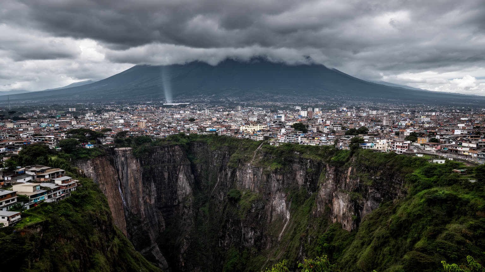
グアテマラシティのリスクは、地震、火山活動、雨季の豪雨、斜面崩壊、洪水、干ばつ、気温変化が重なって生まれる。高原の穏やかな気候は住みやすさを支えるが、脆弱な住宅地や排水の弱い地区では、強い雨が生活を直撃する。火山灰は交通、呼吸器、清掃、水、農産物の流通に影響し、地震は建物の質や避難路の差を露わにする。災害対策は、警報や避難所だけでなく、斜面の土地利用、排水路の管理、耐震化、学校の訓練、地域の連絡網、医療、交通の復旧を含む。貧しい地区ほど危険な土地に住まざるを得ないことがあり、自然災害は社会格差を拡大する。気候変動は中米の農村にも影響し、作物不振や水不足が移住圧力を高め、結果として首都の住宅と雇用にも関わる。都市の安全を考えるなら、火山や地震を特別な危機としてだけでなく、毎日の住宅、道路、排水、情報伝達の問題として扱う必要がある。グアテマラシティの強さは、災害を完全に避けることではなく、被害を小さくし、弱い立場の人を早く見つけ、生活を戻す仕組みを持てるかにかかっている。備えは都市の信頼そのものである。避難情報が届く言語、夜間に歩ける道、学校と教会の協力、病院への搬送経路は、危機の時に数字以上の意味を持つ。日常の小さな整備が、次の災害で命を守る。備蓄と訓練も生活の一部である。平時から続く。
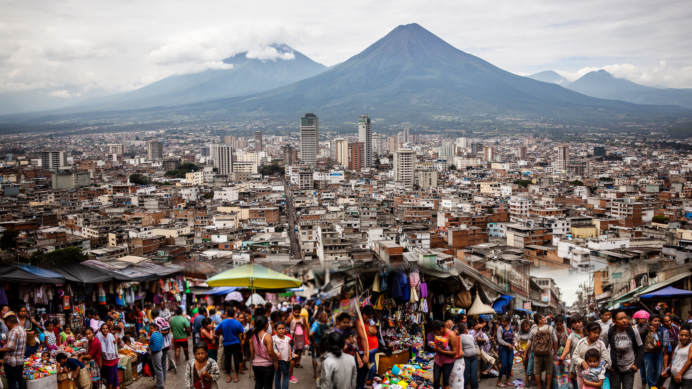
グアテマラシティを読むことは、中米北部の国家、移民、先住民文化、都市化、治安、災害を一つの谷の中で見ることである。首都には政府、銀行、大学、病院、博物館、市場、交通、宗教施設が集まり、国の制度と日常経済が近距離に重なる。火山に囲まれた高原の景観は美しいが、その足元では渋滞、住宅格差、断水、治安不安、非公式労働、移民送金への依存が生活を形作る。マヤ世界と植民地都市の記憶は、展示室や教会だけでなく、市場の言語、織物、家族の儀礼、政治的な代表性の問題として現在に続く。グアテマラシティは、観光客がアンティグアやマヤ遺跡へ向かう前に通過する都市であるだけではない。ここを見れば、地方からの移住、海外への移民、首都への権力集中、商業の現場、宗教の力、災害への脆さが同時に分かる。都市の重要性は摩天楼の数ではなく、国の矛盾と希望がどれほど濃く集まっているかで測られる。グアテマラシティはその意味で、中央アメリカを理解するための実用的で重い入口である。市場の朝、広場の抗議、教会の鐘、火山の輪郭、長い通勤を重ねて初めて、首都の全体像が見えてくる。中央市場や博物館、教会、火山眺望は訪問者にも開かれているが、その魅力は住民の労働と不安から切り離せない。観光と生活を同じ地図で読む時、この都市の密度が立ち上がる。深く。